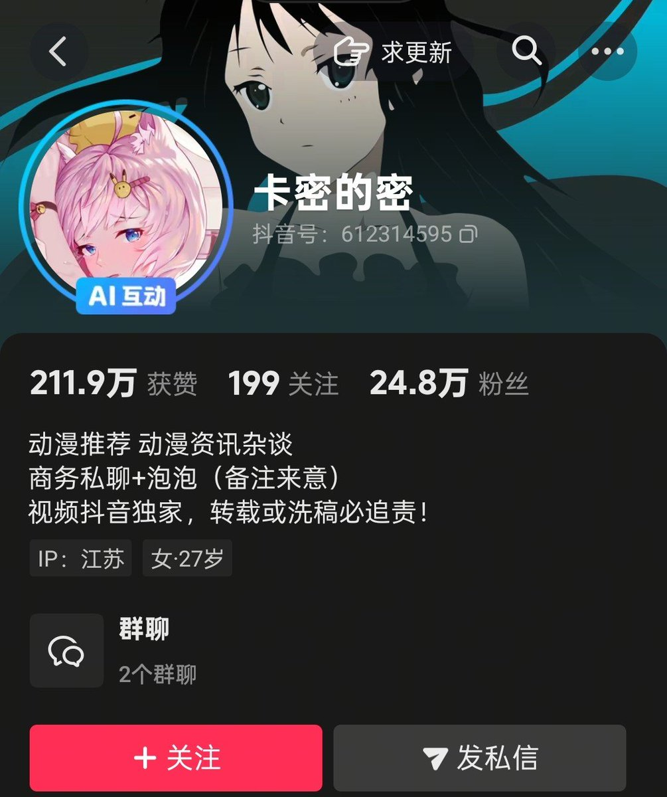
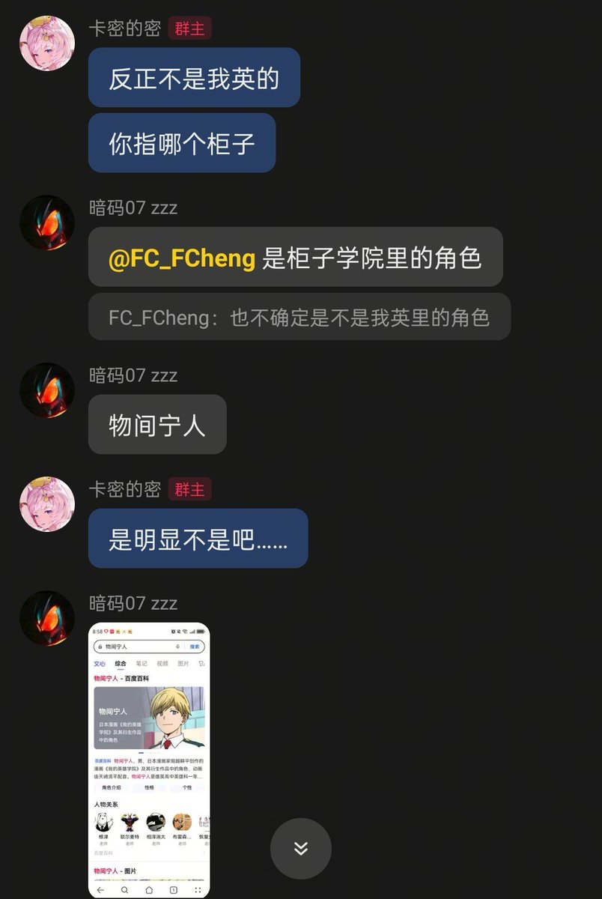
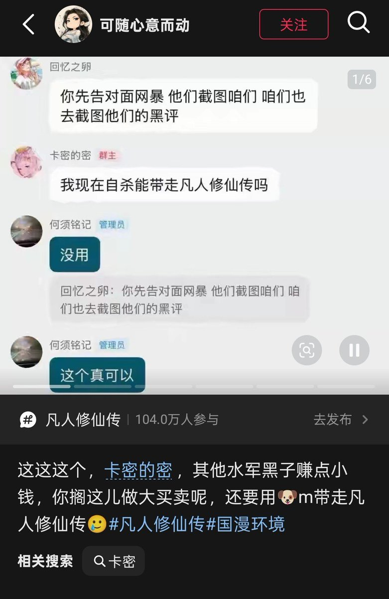
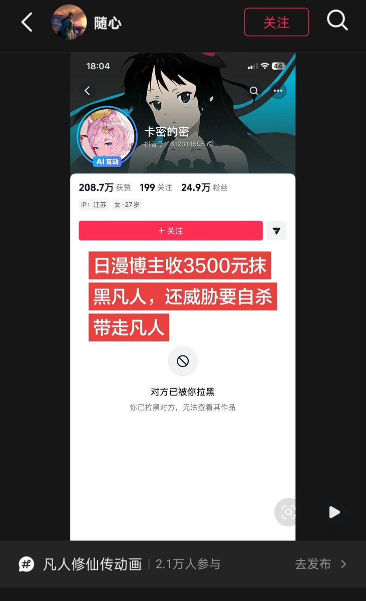

RT @IzayoiMarin: 某音不是营销号但似营销号的日漫杂谈博主卡密的密，其云和挠餐程度不亚于某b的瓶，从它好多视频可以看出她极力反我英，文案和所谓指证都是网上流传烂透的，但从聊天记录可得，她连出现在我英第二季出事前的角色都不认识，还收了钱抹黑某个国漫，甚至威胁自杀带走…





某音不是营销号但似营销号的日漫杂谈博主卡密的密，其云和挠餐程度不亚于某b的瓶，从它好多视频可以看出她极力反我英，文案和所谓指证都是网上流传烂透的，但从聊天记录可得，她连出现在我英第二季出事前的角色都不认识，还收了钱抹黑某个国漫，甚至威胁自杀带走该国漫，还玻璃心犯了拉黑人，🍬完了😂 https://t.co/Ce3BTnLXfj